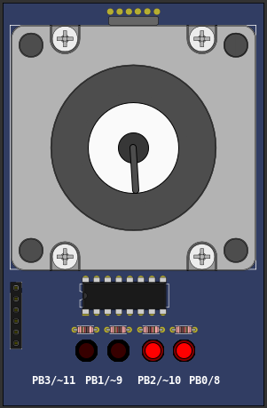
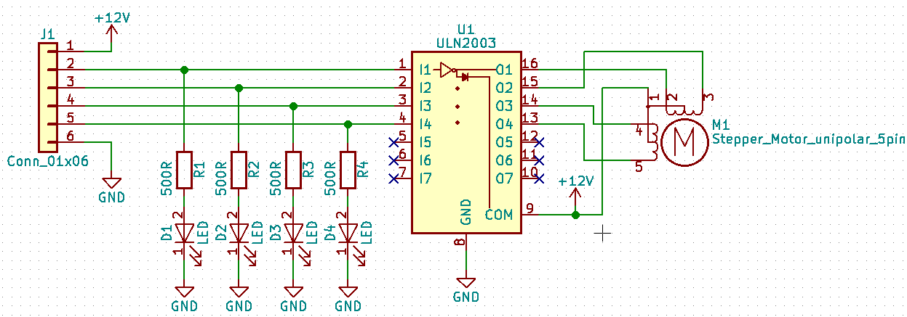
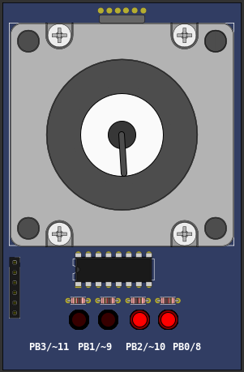
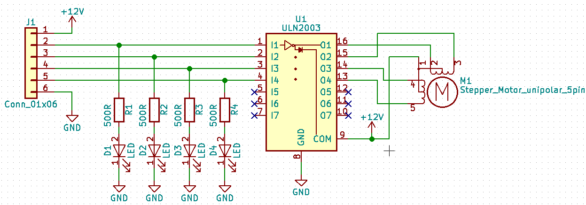

10.3.15 Step Motor
The stepper motor is a component with 4 coils that must be driven in the correct order to rotate the rotor. Each step of the motor is 1.8º.


The stepper motor is a component with 4 coils that must be driven in the correct order to rotate the rotor. Each step of the motor is 1.8º.

